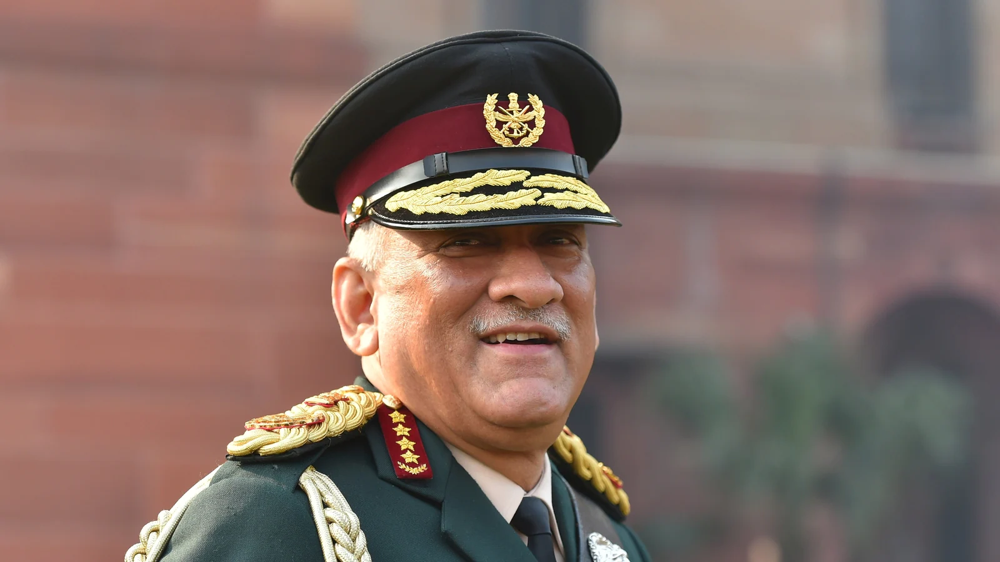

Military Carrier
Rawat was commissioned into the 5th battalion, the 11 Gorkha Rifles on 16 December 1978, the same unit as his father.
During the 1987 Sino-Indian skirmish in the Sumdorong Chu valley, then Captain Rawat's battalion was deployed against the
Chinese People's Liberation Army.The standoff was the first military confrontation along the disputed McMahon Line after
the 1962 war.
He has much experience in high-altitude warfare and spent ten years conducting counter-insurgency operations.
He commanded a company in Uri, Jammu and Kashmir as a Major. As a Colonel, he commanded his battalion, the 5th battalion,
the 11 Gorkha Rifles, in the eastern sector along the Line of Actual Control at Kibithu. Promoted to the rank of Brigadier,
he commanded 5 Sector of Rashtriya Rifles in Sopore.
Rawat commanded MONUSCO (a Multinational Brigade in a Chapter VII mission in the Democratic Republic of the Congo).
Within two weeks of deployment in the DRC, the Brigade faced a major offensive in the east which threatened the
regional capital of North Kivu, Goma. The offensive also threatened to destabilise the country as a whole.
The situation demanded a rapid response and North Kivu Brigade was reinforced, where it was responsible for over
7,000 men and women, representing nearly half of the total MONUSCO force. Whilst simultaneously engaged in
offensive kinetic operations against the CNDP and other armed groups, Rawat (then Brigadier) carried out
tactical support to the Congolese Army (FARDC), He sensitised programmes with the local population and
detailed coordination to ensure that all were informed about the situation and worked together in the
progress of operations. He was responsible for the protection of the vulnerable population.
This operational period lasted for four months. Goma never fell, the East stabilized and
the main armed group was motivated to the negotiating table and has since been integrated
into the FARDC. He was also tasked to present the Revised Charter of Peace Enforcement
to the Special Representatives of the Secretary-General and Force Commanders of all the
UN missions in a special conference at Wilton Park, London, on 16 May 2009.
Rawat was twice awarded the Force Commander’s Commendation.